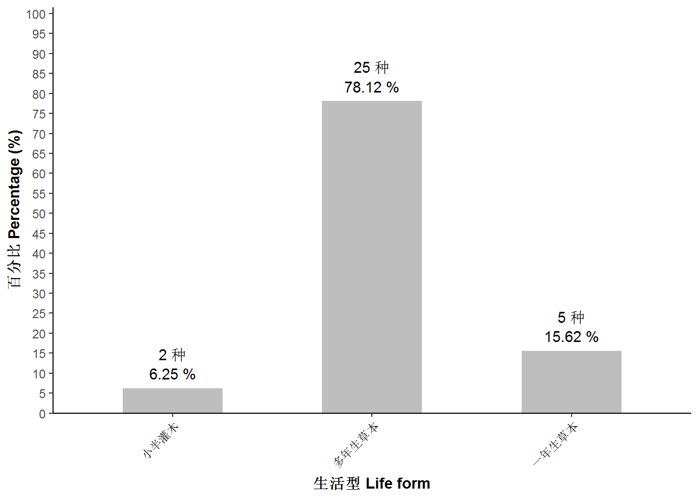
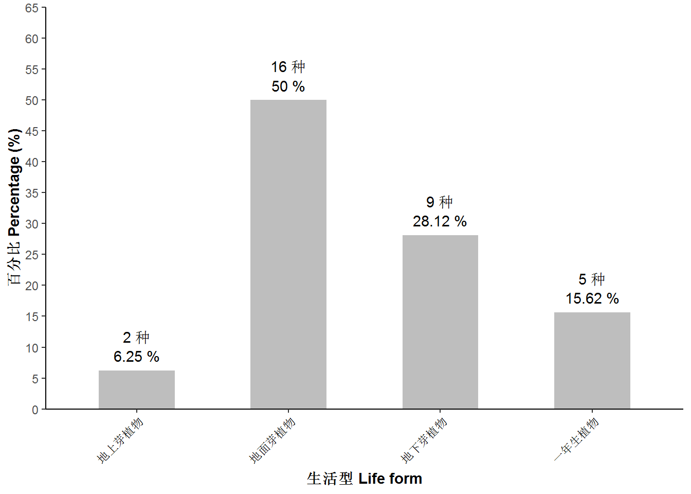
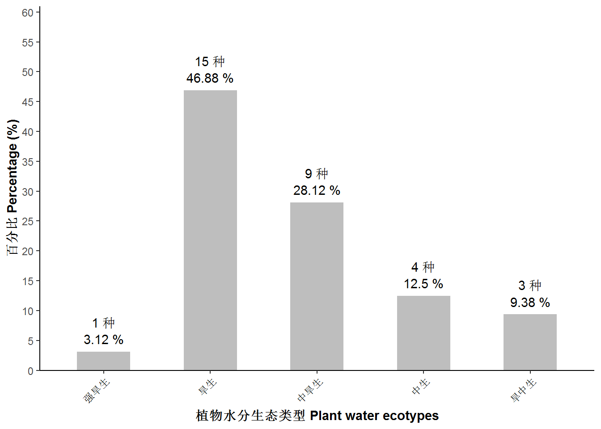
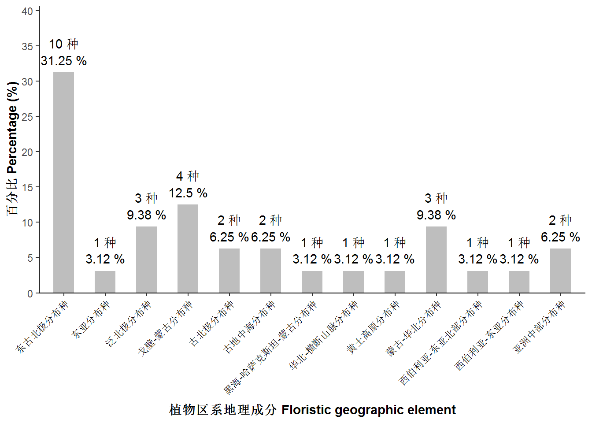
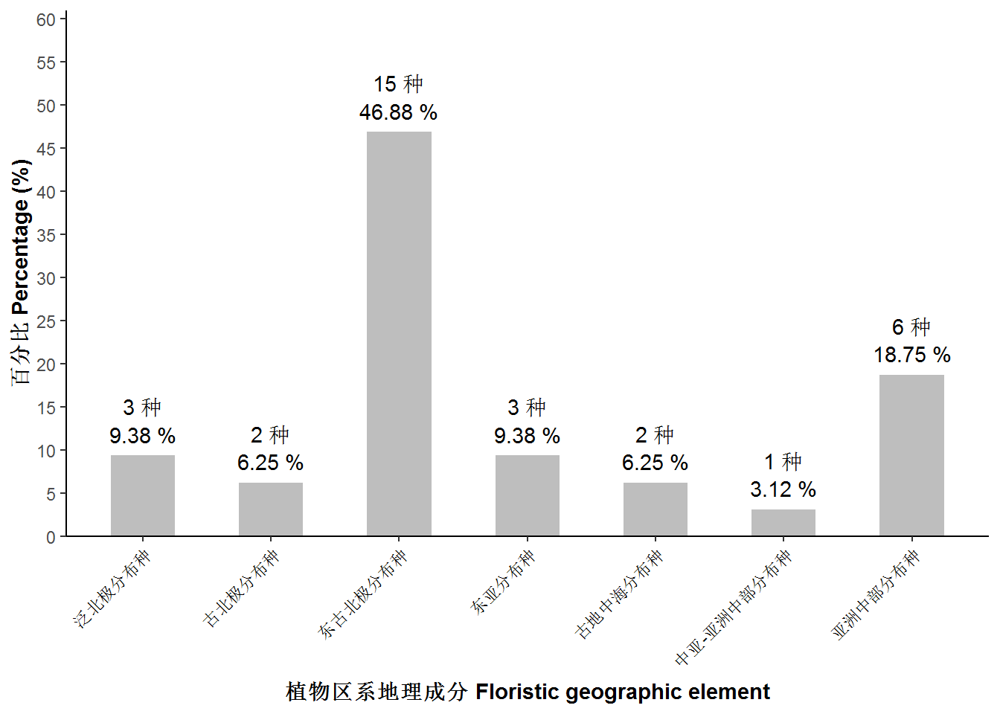
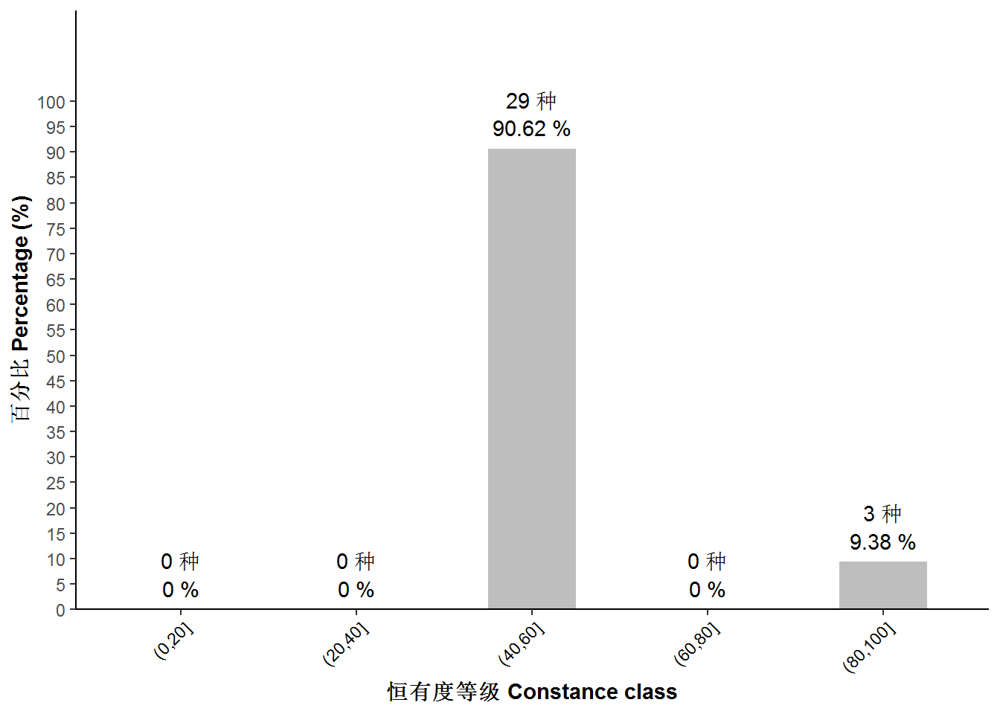
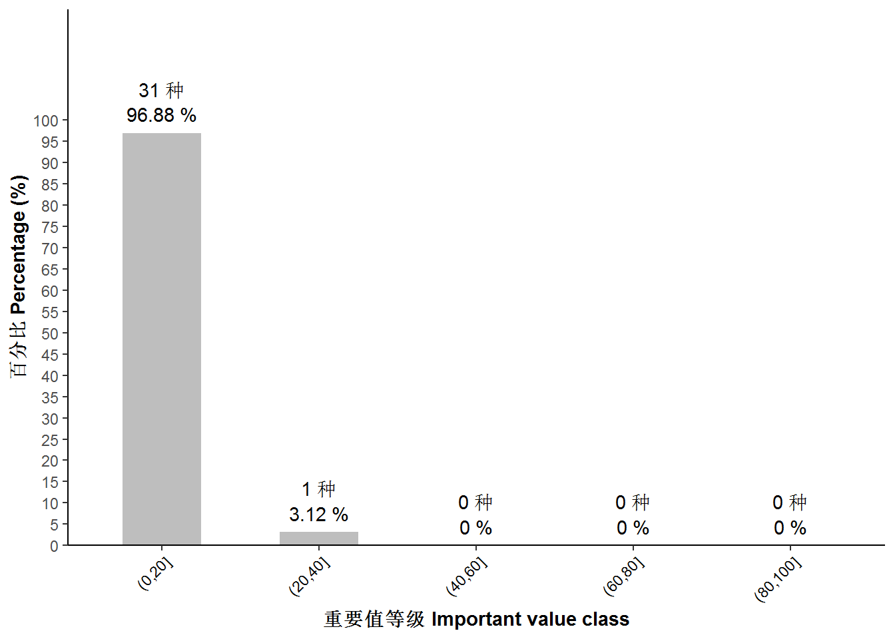
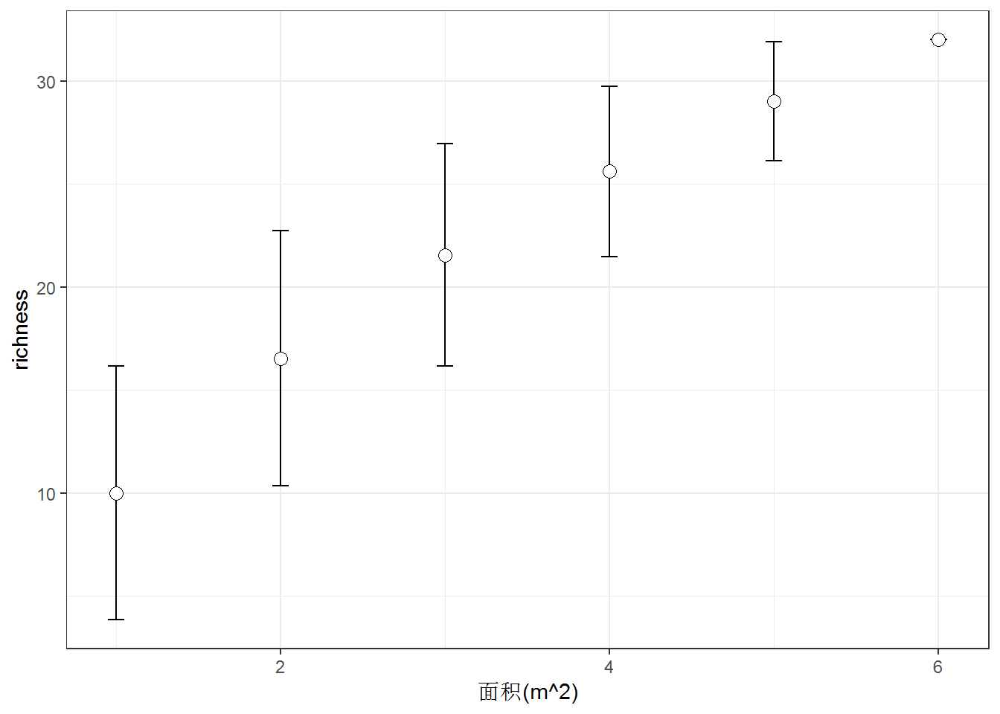

4 区系
- 数据透视表
4.1 科属组成
group<-KS(sp,by="group")
family<-KS(sp,by="family")
genus<-KS(sp,by="genus")- 被子植物和裸子植物
科 属 种 Angiosperm 11 20 32 - 按科统计
科名 FAMILY_APG 属数 种数 种所占比例(%) 蔷薇科 Rosaceae 2 6 18.75 禾本科 Poaceae 4 5 15.62 菊科 Asteraceae 4 5 15.62 唇形科 Lamiaceae 2 4 12.50 石蒜科 Amaryllidaceae 1 4 12.50 苋科 Amaranthaceae 1 2 6.25 车前科 Plantaginaceae 1 1 3.12 菊科 Lamiaceae 1 1 3.12 瑞香科 Thymelaeaceae 1 1 3.12 天门冬科 Asparagaceae 1 1 3.12 旋花科 Convolvulaceae 1 1 3.12 紫葳科 Bignoniaceae 1 1 3.12 - 按属统计
属名 GENUS 种数 种所占比例(%) 葱属 Allium 4 12.50 山莓草属 Sibbaldia 3 9.38 委陵菜属 Potentilla 3 9.38 百里香属 Thymus 2 6.25 冰草属 Agropyron 2 6.25 蒿属 Artemisia 2 6.25 黄芩属 Scutellaria 2 6.25 碱猪毛菜属 Salsola 2 6.25 车前属 Plantago 1 3.12 狗娃花属 Heteropappus 1 3.12 芨芨草属 Achnatherum 1 3.12 角蒿属 Incarvillea 1 3.12 苦荬菜属 Ixeris 1 3.12 赖草属 Leymus 1 3.12 狼毒属 Stellera 1 3.12 猬菊属 Olgaea 1 3.12 旋花属 Convolvulus 1 3.12 隐子草属 Cleistogenes 1 3.12 知母属 Anemarrhena 1 3.12 栉叶蒿属 Neopallasia 1 3.12 - 科属组成的描述 cat表示每科，每层最多描述的物种数，by为前几个大科，会按照生活型展开描述。by2为除前几个科外，按照顺序，接下来要展示的科。
MS_K(sp,com,cat=5,by=4,by2=2)## [1] "蔷薇科（Rosaceae），共2属，6种，占总物种数的18.75%，多年生草本有6种，常见有大萼委陵菜(Potentilla conferta)、伏毛山莓草(Sibbaldia adpressa)、克氏针茅(Sibbaldia adpressa)、轮叶委陵菜(Potentilla verticillaris)、星毛委陵菜(Potentilla acaulis)等。禾本科（Poaceae），共4属，5种，占总物种数的15.62%，多年生草本有5种，常见有羊草(Leymus chinensis)、冰草(Agropyron cristatum)、糙隐子草(Cleistogenes squarrosa)、寸草苔(Agropyron cristatum)、芨芨草(Achnatherum splendens)等。菊科（Asteraceae），共4属，5种，占总物种数的15.62%，多年生草本有3种，常见有阿尔泰狗娃花(Heteropappus altaicus)、山苦荬(Ixeris chinensis)、猬菊(Olgaea lomonossowii)等，一年生草本有2种，常见有栉叶蒿(Neopallasia pectinata)、猪毛蒿(Artemisia scoparia)等，小半灌木有1种，常见有冷蒿(Artemisia frigida)等。唇形科（Lamiaceae），共2属，4种，占总物种数的12.5%，多年生草本有3种，常见有黄囊苔(Scutellaria viscidula)、乳白花黄芪(Thymus mongolicus)、粘毛黄芩(Scutellaria viscidula)等，小半灌木有1种，常见有百里香(Thymus mongolicus)等。除以上物种数较多的4个科外，还有旋花科（Convolvulaceae）的银灰旋花（Convolvulus ammannii）;石蒜科（Amaryllidaceae）的细叶葱（Olgaea lomonossowii）、多根葱（Allium senescens）、蒙古韭（Allium mongolicum）、山韭（Allium senescens）也在群落中出现频度较高且优势度较大。"4.2 生活型
按照生活型进行绘图，列表，描述（展示所有木本物种）
SHX(sp,by="shx",out='plot')
SHX(sp,by="shx",out='table')| 生活型 | 种数 | 百分比 |
|---|---|---|
| 多年生草本 | 25 | 78.12 |
| 一年生草本 | 5 | 15.62 |
| 小半灌木 | 2 | 6.25 |
MS_SHX(sp,com)## [1] "多年生草本有25种，占总物种数的78.12%；一年生草本有5种，占总物种数的15.62%，；小半灌木有2种，占总物种数的6.25%，有冷蒿（Artemisia frigida）、百里香（Thymus mongolicus）。"- 芽的位置
SHX(sp,by="shx2",out='plot')
SHX(sp,by="shx2",out='table')| 生活型 | 种数 | 百分比 |
|---|---|---|
| 地面芽植物 | 16 | 50.00 |
| 地下芽植物 | 9 | 28.12 |
| 一年生植物 | 5 | 15.62 |
| 地上芽植物 | 2 | 6.25 |
4.3 水分生态型
SHX(sp,by="stx",out='plot')
SHX(sp,by="stx",out='table')| 水分生态类型 | 种数 | 百分比 |
|---|---|---|
| 旱生 | 15 | 46.88 |
| 中旱生 | 9 | 28.12 |
| 中生 | 4 | 12.50 |
| 旱中生 | 3 | 9.38 |
| 强旱生 | 1 | 3.12 |
MS_STX(sp)## [1] "旱生植物有15种，占总物种数的46.88%；中旱生植物有9种，占总物种数的28.12%；中生植物有4种，占总物种数的12.5%；旱中生植物有3种，占总物种数的9.38%；强旱生植物有1种，占总物种数的3.12%。"4.4 区系地理
- 加载区系地理成分的编号表
data("qx_ecoding")- 运行以下函数，检查没有进行匹配的区系地理成分的物种。建议qxdl编号表进行增加或对sp表内物种的区系地理成分进行检查。将某些较小分布加以扩大以便能完全匹配。
sp[!(sp$'区系地理成分' %in% qxdl$'区系地理成分')==TRUE,1]## character(0)- 按照编号表，进行统计
QX_TABLE(sp,qxdl)- 表格
序号 区系地理成分 种数 合计种数 百分比 合计百分比 3 泛北极分布种 3 3 9.38 9.38 4 古北极分布种 2 2 6.25 6.25 5 东古北极分布种 10 15 31.25 46.88 5.2 西伯利亚-东亚分布种 1 3.12 5.2.1 西伯利亚-东亚北部分布种 1 3.12 5.3.1.1 蒙古-华北分布种 3 9.38 6 东亚分布种 1 3 3.12 9.38 6.1.2.1 黄土高原分布种 1 3.12 6.2 华北-横断山脉分布种 1 3.12 8 古地中海分布种 2 2 6.25 6.25 9.1 黑海-哈萨克斯坦-蒙古分布种 1 1 3.12 3.12 10 亚洲中部分布种 2 6 6.25 18.75 10.3 戈壁-蒙古分布种 4 12.50 - 描述
MS_QXDL(sp,com,qxdl,cut=2)## [1] "东古北极分布种有15种，占总物种数的46.875%，有羊草、银灰旋花等；亚洲中部分布种有6种，占总物种数的18.75%，有克氏针茅、多根葱等；东亚分布种有3种，占总物种数的9.375%，有乳白花黄芪、角蒿等；泛北极分布种有3种，占总物种数的9.375%，有冷蒿、寸草苔等；古北极分布种有2种，占总物种数的6.25%，有猪毛蒿、平车前等；古地中海分布种有2种，占总物种数的6.25%，有芨芨草、刺沙蓬等；中亚-亚洲中部分布种有1种，占总物种数的3.125%，有糙隐子草等。"- 绘图(原始的和，匹配了区系表的)
SHX(sp,by="qxdl",out='plot')
SHX(sp,by="qxdl2",qxdl=qxdl,out='plot')
4.5 恒有度
- 反映群落的常见种
HYD(com,out='table')| sp | 频度 | 相对频度百分比 | dj |
|---|---|---|---|
| 细叶葱 | 2 | 100 | (80,100] |
| 羊草 | 2 | 100 | (80,100] |
| 银灰旋花 | 2 | 100 | (80,100] |
| 阿尔泰狗娃花 | 1 | 50 | (40,60] |
| 百里香 | 1 | 50 | (40,60] |
| 冰草 | 1 | 50 | (40,60] |
| 糙隐子草 | 1 | 50 | (40,60] |
| 刺沙蓬 | 1 | 50 | (40,60] |
| 寸草苔 | 1 | 50 | (40,60] |
| 大萼委陵菜 | 1 | 50 | (40,60] |
| 多根葱 | 1 | 50 | (40,60] |
| 伏毛山莓草 | 1 | 50 | (40,60] |
| 黄囊苔 | 1 | 50 | (40,60] |
| 芨芨草 | 1 | 50 | (40,60] |
| 角蒿 | 1 | 50 | (40,60] |
| 克氏针茅 | 1 | 50 | (40,60] |
| 狼毒 | 1 | 50 | (40,60] |
| 冷蒿 | 1 | 50 | (40,60] |
| 轮叶委陵菜 | 1 | 50 | (40,60] |
| 蒙古韭 | 1 | 50 | (40,60] |
| 平车前 | 1 | 50 | (40,60] |
| 乳白花黄芪 | 1 | 50 | (40,60] |
| 山韭 | 1 | 50 | (40,60] |
| 山苦荬 | 1 | 50 | (40,60] |
| 双齿葱 | 1 | 50 | (40,60] |
| 猬菊 | 1 | 50 | (40,60] |
| 星毛委陵菜 | 1 | 50 | (40,60] |
| 粘毛黄芩 | 1 | 50 | (40,60] |
| 知母 | 1 | 50 | (40,60] |
| 栉叶蒿 | 1 | 50 | (40,60] |
| 皱黄芪 | 1 | 50 | (40,60] |
| 猪毛蒿 | 1 | 50 | (40,60] |
HYD(com,out='plot')
4.6 重要值等级
- 反映群落的优势种
IVDJ(com,out='table')| sp | iv | per | dj |
|---|---|---|---|
| 羊草 | 0.7543503385 | 37.7175169240 | (20,40] |
| 芨芨草 | 0.1712832551 | 8.5641627531 | (0,20] |
| 克氏针茅 | 0.1322686769 | 6.6134338431 | (0,20] |
| 银灰旋花 | 0.1243135575 | 6.2156778732 | (0,20] |
| 细叶葱 | 0.1031372339 | 5.1568616964 | (0,20] |
| 冷蒿 | 0.0982853574 | 4.9142678709 | (0,20] |
| 多根葱 | 0.0844285758 | 4.2214287904 | (0,20] |
| 糙隐子草 | 0.0499568756 | 2.4978437796 | (0,20] |
| 猪毛蒿 | 0.0457136565 | 2.2856828247 | (0,20] |
| 栉叶蒿 | 0.0440342077 | 2.2017103849 | (0,20] |
| 阿尔泰狗娃花 | 0.0419733355 | 2.0986667728 | (0,20] |
| 双齿葱 | 0.0408587348 | 2.0429367390 | (0,20] |
| 大萼委陵菜 | 0.0333654429 | 1.6682721461 | (0,20] |
| 狼毒 | 0.0285604218 | 1.4280210878 | (0,20] |
| 皱黄芪 | 0.0284719786 | 1.4235989306 | (0,20] |
| 寸草苔 | 0.0252109522 | 1.2605476106 | (0,20] |
| 冰草 | 0.0200124912 | 1.0006245603 | (0,20] |
| 猬菊 | 0.0174065608 | 0.8703280418 | (0,20] |
| 粘毛黄芩 | 0.0163250746 | 0.8162537277 | (0,20] |
| 轮叶委陵菜 | 0.0160321778 | 0.8016088922 | (0,20] |
| 乳白花黄芪 | 0.0153454459 | 0.7672722964 | (0,20] |
| 刺沙蓬 | 0.0148918105 | 0.7445905273 | (0,20] |
| 角蒿 | 0.0143227508 | 0.7161375391 | (0,20] |
| 蒙古韭 | 0.0143167417 | 0.7158370871 | (0,20] |
| 山韭 | 0.0131706466 | 0.6585323295 | (0,20] |
| 伏毛山莓草 | 0.0129356365 | 0.6467818229 | (0,20] |
| 知母 | 0.0114675355 | 0.5733767743 | (0,20] |
| 黄囊苔 | 0.0085398632 | 0.4269931625 | (0,20] |
| 山苦荬 | 0.0079568889 | 0.3978444446 | (0,20] |
| 平车前 | 0.0046147814 | 0.2307390721 | (0,20] |
| 百里香 | 0.0040581538 | 0.2029076924 | (0,20] |
| 星毛委陵菜 | 0.0023908400 | 0.1195420025 | (0,20] |
IVDJ(com,out='plot')
4.7 SAR种面积曲线
p<-SAR(plantcom$comm)## Warning in cor(x > 0): the standard deviation is zerolibrary(ggplot2)
p+labs(x="面积(m^2)")